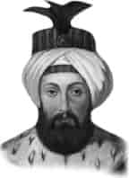

III. OSMAN
Annesi : Şehsuvar Valide Sultan
Doğumu : 2 Ocak 1699
Vefatı : 30 Ekim 1757
Saltanatı : 1754 - 1757 (3 yıl)
III. Osman, İstanbul’da doğdu. Terbiyesi ile çok dindar olan annesi meşgul oldu. Çok cömert birisi idi. Fakirlere son derece şefkat gösterirdi. Hattatlığa çalıştı ve çok güzel yazılar yazdı. Hazreti Peygamberimiz’in Kademi Şeriflerini tersim ederek, yanına bir de tuğra yaptıktan sonra, Eyüp Sultan Türbesi’ne hediye etti.
III. Osman sert asabi ve tez hüküm veren bir mizaca sahipti. Kadınlara karşı çok dikkatliydi. Sarayda gezinirken, ökçeleri çivili ayakkabı giyer, gezdikçe ayak tıkırtılarını duyan kadınlar odalarına kaçarlardı. Tahta çıktığında elli altı yaşına yaklaşıyordu.
Zamanındaki önemli olaylar şunlardır: 1755’te Haliç dondu. Aynı yıl İstanbul’un yarıdan çoğunun zarar gördüğü bir yangın oldu. Bir yıl sonra ikinci bir yangında da dört bine yakın ev yandı. I. Mahmut’un yaptırdığı Nuruosmaniye Camii bu devirde (1755’te) ibadete açıldı.
III. Osman elli sekiz yaşını geçtiği bir sırada vefat etti. Cenazesi Yeni Camii yanındaki Sultan Mahmut Han’ın yanına defnedildi.
Çocuğu yoktu.